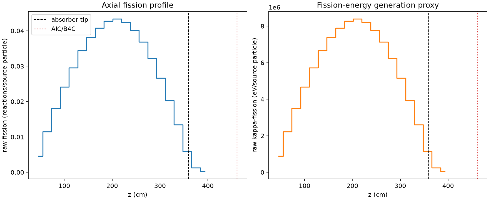
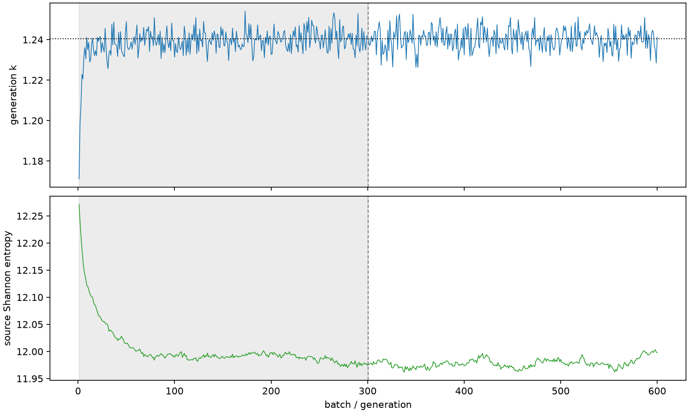

| field | value |
|---|---|
| experiment | V2-STAGE_128_OGRENCI_02-0004 |
| k | 1.2404856503956465 |
| MC standard error | 0.00018200381598998432 |
| seconds | 1149.7749338009999 |
| acceptance | not_assessed |
| convergence | review_required |
Completed is output integrity only; physical and statistical review required. Zero tallies do not prove zero production or zero uncertainty.
| diagnostic | value |
|---|---|
| geometric fuel voxels | 5280 |
| zero fission tally voxels | 0 |
| low signal fuel voxels | 0 |
| low signal fission share | 0.0 |
| low signal kappa share | 0.0 |
| important fission share | 0.9500629116912418 |
| previous filter included | 5280 |
| duration estimate s | 1562.5173488400023 |
| actual minus estimate s | -412.7424150390025 |
| fission relative MC error | statistics |
|---|---|
| all_geometric_fuel | {"voxels": 5280, "positive_mean_voxels": 5280, "zero_mean_voxels": 0, "undefined_relative_error_voxels": 0, "median": 0.010869445856238908, "p95": 0.05875441233007802, "maximum": 0.14685467869076202} |
| low_signal | {"voxels": 0, "positive_mean_voxels": 0, "zero_mean_voxels": 0, "undefined_relative_error_voxels": 0, "median": null, "p95": null, "maximum": null} |
| important_95pct | {"voxels": 3921, "positive_mean_voxels": 3921, "zero_mean_voxels": 0, "undefined_relative_error_voxels": 0, "median": 0.009880836017974707, "p95": 0.014943083461944506, "maximum": 0.01892189834241999} |
| outside_previous_filter | {"voxels": 0, "positive_mean_voxels": 0, "zero_mean_voxels": 0, "undefined_relative_error_voxels": 0, "median": null, "p95": null, "maximum": null} |
| kappa_fission relative MC error | statistics |
|---|---|
| all_geometric_fuel | {"voxels": 5280, "positive_mean_voxels": 5280, "zero_mean_voxels": 0, "undefined_relative_error_voxels": 0, "median": 0.0108572248721325, "p95": 0.05866880342345088, "maximum": 0.14666781812768082} |
| low_signal | {"voxels": 0, "positive_mean_voxels": 0, "zero_mean_voxels": 0, "undefined_relative_error_voxels": 0, "median": null, "p95": null, "maximum": null} |
| important_95pct | {"voxels": 3921, "positive_mean_voxels": 3921, "zero_mean_voxels": 0, "undefined_relative_error_voxels": 0, "median": 0.009869401791392536, "p95": 0.01492738882554089, "maximum": 0.01890143920849152} |
| outside_previous_filter | {"voxels": 0, "positive_mean_voxels": 0, "zero_mean_voxels": 0, "undefined_relative_error_voxels": 0, "median": null, "p95": null, "maximum": null} |
| axial bin | fission share | kappa-fission share |
|---|---|---|
| 1 | 0.00900478043264523 | 0.009005164819102279 |
| 2 | 0.022647997228688783 | 0.022648091370260064 |
| 3 | 0.03571143983687352 | 0.03571130972374135 |
| 4 | 0.047693043210737085 | 0.04769294559843608 |
| 5 | 0.05836702880708825 | 0.058366807136628354 |
| 6 | 0.0679279924065466 | 0.06792793281424278 |
| 7 | 0.07525100867553007 | 0.07525094620783289 |
| 8 | 0.08053190687748082 | 0.08053182415392415 |
| 9 | 0.08430232373203408 | 0.08430208002003613 |
| 10 | 0.0855442175396962 | 0.08554387393417295 |
| 11 | 0.08372232290716072 | 0.0837222613226698 |
| 12 | 0.0792360612331867 | 0.07923602412874446 |
| 13 | 0.07272601329865191 | 0.07272565364902059 |
| 14 | 0.06362105552986129 | 0.06362093606221157 |
| 15 | 0.052581803718276955 | 0.05258168817331842 |
| 16 | 0.04004992027713435 | 0.04004985439570969 |
| 17 | 0.026497616459147312 | 0.026497485337647595 |
| 18 | 0.011617254712881886 | 0.011617940769248783 |
| 19 | 0.0024569194215108823 | 0.0024576907293977278 |
| 20 | 0.0005092936948675348 | 0.0005094896536544905 |
Histories include the inactive-to-active transition at batch 300. kappa-fission approximates fission energy production, not total heat deposition.

